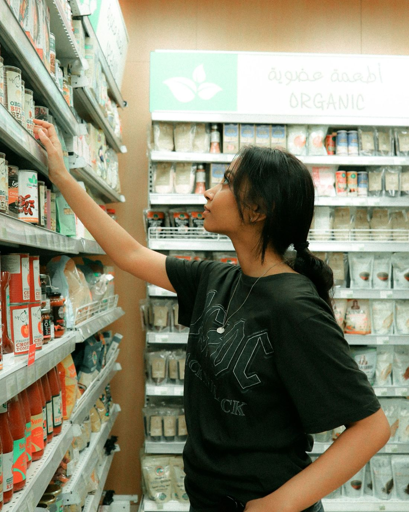
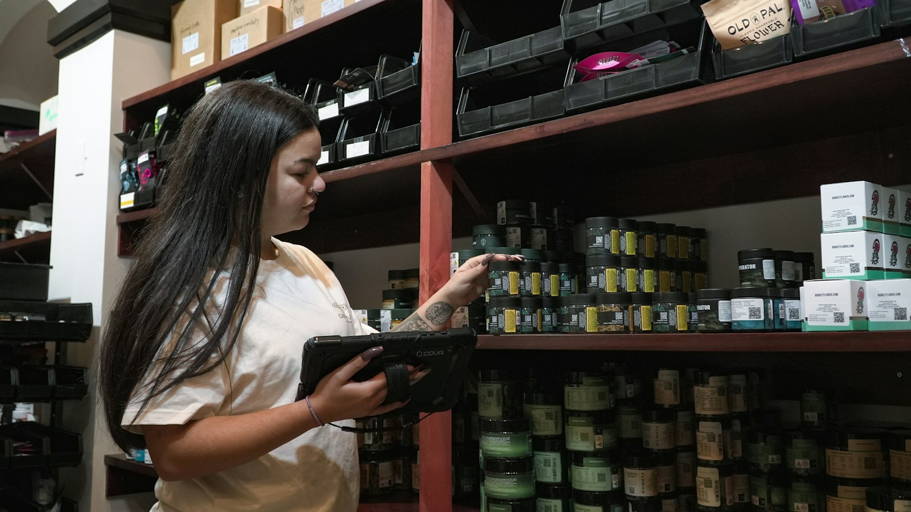

Onboarding Visionário
O promotor chega à loja sabendo o padrão, a marca e o porquê do trabalho.
IMPACTOMenos saídas nos primeiros meses e produtividade mais cedo.
Marcas onde atuamos e operações que já atendemos. Conhecemos o que a indústria cobra e o que o campo precisa para entregar.

das decisões de compra no supermercado acontecem no ponto de venda.
dos itens estavam em falta nas gôndolas dos supermercados em julho de 2026.
Equipe, promotores, sistemas e investimento não bastam se a execução não chega à loja.
Fontes: POPAI, Consumer Engagement Study (via Meio & Mensagem); Neogrid, Índice de Ruptura jul/2026 (via Mercado&Consumo).Se você reconhece 2 ou mais destes sinais, a performance está sendo perdida em algum ponto do sistema. Vamos conversar
dos itens em falta nas gôndolas dos supermercados. Produto que não está na gôndola não vende.
o salário anual: é o custo de substituir quem sai. E 52% das saídas poderiam ter sido evitadas.
da variação no engajamento de uma equipe vem do gestor direto. Supervisor despreparado derruba o time.
Cada um desses pontos aparece no sell-out, na verba e no retorno do investimento em trade. Cada um desses pontos aparece na margem, no SLA e na renovação do contrato.
Fontes: Neogrid, Índice de Ruptura jul/2026 (Mercado&Consumo); Gallup, “This Fixable Problem Costs U.S. Businesses $1 Trillion” (2019); Gallup, “Managers Account for 70% of Variance in Employee Engagement” (2015).Treinamento não é evento. É parte da estratégia de performance: conhecimento que vira comportamento e execução.
de retenção de novos colaboradores quando o onboarding é bem estruturado.
Fonte: Brandon Hall Group (citado pela ABRH-PR / Gazeta do Povo).O promotor chega à loja sabendo o padrão, a marca e o porquê do trabalho.
Treinamento de promotores com visão e propósito: técnica de merchandising, execução e relação com a loja.
Supervisores, coordenadores e gerentes com rotina de gestão, feedback e correção de rota.
Coleta rápida, completa e comparável entre lojas.
Menos retrabalho e informação no prazo.
Menos retrabalho e relatório no prazo.
Relatório que mostra resultado, não só atividade.
O valor do trade visível para quem aprova a verba.
Seu cliente enxerga o valor da entrega.
Mais lojas atendidas com o mesmo time e menos deslocamento.
Você paga pela execução. Nós mostramos se ela está acontecendo e organizamos a gestão para que aconteça.
Agências terceirizadas: contratado x executado, com visão independente.
Desvios e pontos críticos, loja a loja.
Processos e relatórios de todas as agências no mesmo formato.
Monitoramento com reuniões, painéis e planos de ação.
Modelo, dimensionamento e cargos, do promotor ao gerente.
Quem contrata agência quer entrega comprovada. Preparamos sua operação para mostrar resultado antes que o cliente pergunte.
Resultado comprovado em report, não em discurso.
Roteiro, coleta e BKO organizados para entregar no prazo. SLA de reposição.
Menos turnover, retrabalho e deslocamento.
Onboarding e metodologia de reports como argumento de venda.
Um diagnóstico de fora da sua operação, antes do cliente.
Os indicadores são definidos com cada cliente, de acordo com o desafio e o modelo de operação.
Thiago Archanjo, fundador: 17+ anos em indústrias, agências e varejo. Começou como promotor e chegou à gestão nacional de Trade Marketing. Sabe o que a indústria cobra e o que a agência precisa para entregar.
Veja os clientes e marcas que já atendemosAntes de treinar ou reestruturar, entendemos onde a performance está sendo perdida.
Desafios, metas e modelo de operação.
Lojas, equipes, processos e dados.
Priorizadas pelo impacto no resultado.
Avaliação, diagnóstico, correção e acompanhamento.
Serviços, indicadores e metas de acompanhamento.

Conte o seu desafio. Respondemos rápido e marcamos uma conversa inicial para entender a sua operação.